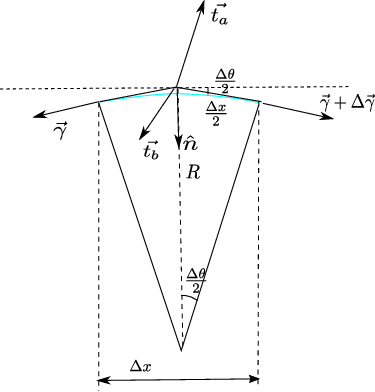

2. Surface Tension#
2.1. Young-Laplace Law#
The interface between two liquids can be modeled as a membrane, a two-dimensional surface within which a force per unit length acts tangentially to the surface itself. The force per unit thickness \(\gamma\) acting in the membrane is defined as surface tension. The Young-Laplace law relates the surface tension, the pressure difference across the interface, and the curvature of the surface itself. In the case of constant surface tension, the following relation holds:
where \(R_1\) and \(R_2\) are the principal radii of curvature of the surface, and \(H\) is the mean curvature.

2.2. Young-Laplace Law in Two Dimensions#
The Young-Laplace law is derived in two dimensions by writing the equilibrium of a membrane element (one-dimensional) subject to the stresses exerted by the two fluids on it and the surface tension within it. The vector equilibrium equation is projected in the normal and tangential directions to the surface. The surface near a point is approximated as an infinitesimal arc of a circle, as shown in the figure.
An infinitesimal surface element of size \(\Delta x \sim R \Delta \theta\) is considered. The angle \(\Delta \theta\) is also «small» (\(\cos \Delta \theta \sim 1\), \(\sin \Delta\theta \sim \Delta\theta\)), so the size of the surface element is approximated by its projection on a plane normal to \(\mathbf{\hat{n}}\), … \(R\) is the radius of curvature of the surface.
We write the equilibrium:
Projecting in the normal and tangential directions to the surface:
Substituting the approximated values for \(\sin \Delta \theta\) and \(\cos \Delta \theta\), and neglecting higher-order terms (\(\Delta \gamma \Delta \theta\)):
If we identify the coordinate describing the surface with the coordinate \(x\), we can approximate \(\Delta \gamma \sim \frac{\partial \gamma}{\partial x} \Delta x\). Using the relation \(\frac{\Delta x}{2} \sim R \frac{\Delta \theta}{2}\) and simplifying \(\Delta x\):
In the case of a static problem, the only stress on the fluid comes from pressure, which acts normal to the surface: \(\mathbf{t}_a = -P_a \mathbf{\hat{n}_a}\), \(\mathbf{t}_b = -P_b \mathbf{\hat{n}_b}\). The stress that the fluid exerts on the interface is equal in magnitude and opposite in direction. The two normals are opposite to each other: we choose to define the normal \(\mathbf{\hat{n}} = \mathbf{\hat{n}_a} = -\mathbf{\hat{n}_b}\). Consequently, the components of the stresses on the interface projected along \(\mathbf{\hat{n}}\) and a tangential unit vector are: \({{t_a}_n} = P_a\), \({{t_b}_n} = - P_b\), \({{t_a}_t} = 0\), \({{t_b}_t} = 0\). If \(\gamma\) is constant (surface tension can have non-zero gradients due to temperature or concentration differences), the tangential equilibrium is identically satisfied.
2.2.1. Extension to the 3D Case#
To extend the derivation to the 3D case, where the surface is two-dimensional, we proceed similarly to the previous paragraph. The curvature of a surface must be considered, not of a curve (there are two radii of curvature)… A useful introduction to differential geometry of curves and surfaces is available online at:
Differential Geometry, Shiffrin
The existence of surface tension explains the phenomena of capillarity, the presence of menisci at the interface between two fluids, the ability of insects or paper clips to float on water, the formation of «minimal» soap film surfaces, the wetting properties of surfaces, and the breakup of small-diameter jets into droplets. Finally, it can even be used as an unconventional propulsion method for paper boats: